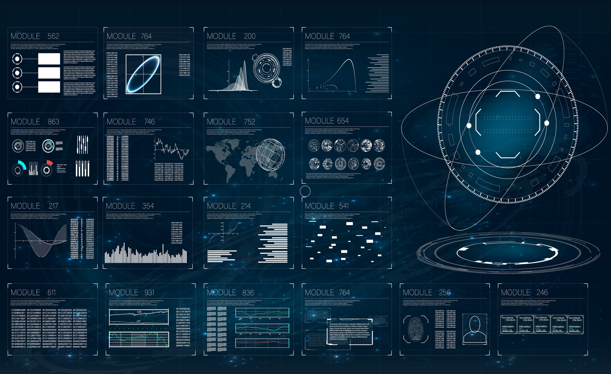

El futuro, a tu alcance.

Existimos para resolver los desafíos más abrumadores que enfrenta la humanidad en la actualidad, para
proteger y
promover la libertad en todo el mundo y para asegurar nuestro futuro, para nuestras familias, nuestras
comunidades y nuestra forma de vida.
Ciberseguridad
Iron Wolf ofrece soluciones y servicios cibernéticos robustos, lo que permite a nuestros clientes proteger
su dominio digital. Nuestras soluciones respaldan las
necesidades de capacidad defensiva y ofensiva. Nuestros servicios incluyen protección 24x7x365 de las
redes y sistemas de datos más críticos.
El enfoque de Iron Wolf para brindar capacidades integrales de misión cibernética está respaldado por
nuestras tecnologías de análisis y gestión de la información,
que recopilan y difunden datos para contrarrestar las amenazas adversas.
OPERACIONES CIBERNÉTICAS DEFENSIVAS
En el espacio digital actual, los profesionales cibernéticos de Iron Wolf están desarrollando capacidades operativas de vanguardia para defender las redes
contra adversarios en cualquier entorno. Monitoreamos continuamente sistemas, software y
dispositivos, proporcionamos redes privadas, evaluamos y probamos tecnologías emergentes, respondemos rápida e integralmente a todos los incidentes. También,
desarrollamos las herramientas, el software y los sistemas necesarios.
Inteligencia
Iron Wolf proporciona soporte de operaciones de misión crítica, capacidades de gestión de misión y
servicios de ingeniería en apoyo de la comunidad de inteligencia y sus misiones críticas.
SERVICIOS DE COMUNICACIÓN SEGURA
Diseñamos, desarrollamos, implementamos, operamos y mantenemos sistemas de transporte de datos seguros y altamente confiables y
redes de misión crítica para voz, datos y video. Con una disponibilidad del 99,999 por ciento y soporte las 24 horas del día, los 7 días de la semana,
nuestros sistemas integrados brindan a los clientes los datos críticos necesarios para una toma de decisiones informada y una colaboración eficiente.
Defensa
Iron Wolf proporciona soluciones estratégicas para plataformas y misiones en dominios aéreos, terrestres y marítimos. Simulación de amenazas, integración de rango de prueba e instrumentación,
sistemas de detección de largo alcance y alerta temprana, aviónica y aviónica naval. Logística, sistemas marítimos y terrestres avanzados no tripulados.
ESTRATEGIA DEFENSIVA
Trabajamos con planificadores de misiones para realizar análisis de sistemas, desarrollar cronogramas de misiones, proporcionar estimaciones de costos
y ejecutar planes de implementación. Además, nos aseguramos de que los sistemas
que operamos y mantenemos se integren a la perfección con los activos de nuestros clientes a través de amplias actualizaciones, pruebas y reingeniería de sistemas obsoletos.